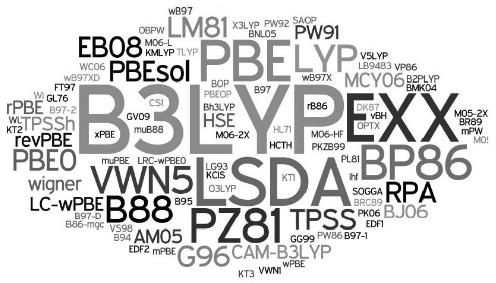
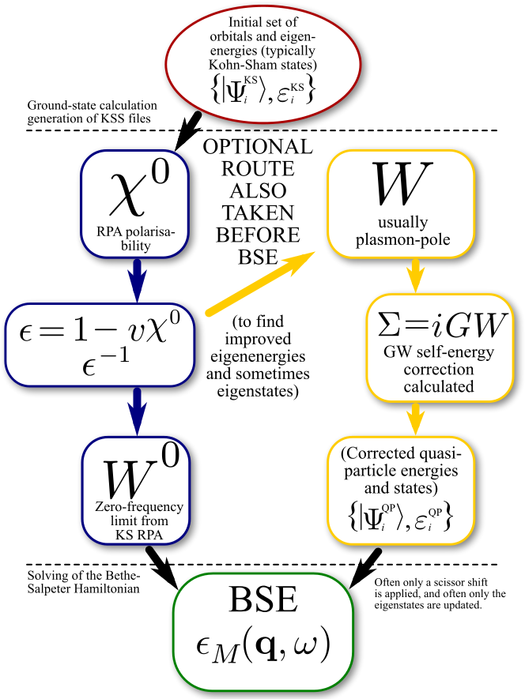

Quantum Theory Group


The Quantum Theory group works to develop theoretical and computational tools enabling the design and understanding of advanced materials, developing new quantum functionalities of materials by nanoscale and molecular engineering and translating these functionalities into quantum devices. These devices include new quantum circuits based on graphene and other 2D crystals, low-power and quantum electronics based on electron spin, photonic devices for secure quantum communication, improved solar energy harvesting and sensing at the single atom, electron, photon and spin level. We are particularly interested in designing emerging properties of materials at the many body level - properties of material which cannot be inferred from the properties of its constituents.

- P. Hawrylak, F. Peeters and K. Ensslin, "Carbononics – integrating electronics, photonics and spintronics with graphene quantum dots," Physica Status Solidi 10, 3-121 (2016).
- A.D. Guclu, P.Potasz, M.Korkusinski and P.Hawrylak, "Graphene Quantum Dots", Springer 2014.
- C-Y. Hsieh, Y.P. Shim. M. Korkusinski and P. Hawrylak, "Physics of triple quantum dot molecule with controlled electron numbers", Rep. Prog. Phys. 75, 114501 (2012).
- Weidong Sheng, Marek Korkusinski, Alev Devrim Guclu, Michal Zielinski, Pawel Potasz, Eugene S. Kadantsev, Oleksandr Voznyy, Pawel Hawrylak, "Electronic and optical properties of semiconductor and graphene quantum dots", Frontiers of Physics 7, 328 (2012), Higher Education Press- Springer-Verlag, Berlin Heidelberg.
- P. Hawrylak,"Magnetic ion-carrier interactions in quantum dots", in "The Physics of Diluted Magnetic Semiconductors" Springer series in materials science, p191-220, Springer-Verlag 2011 , J. Gaj and J. Kossut, Editors.
- M. Korkusinski and P. Hawrylak, "Coded qubits based on electrons spin", in "Semiconductor quantum bits", World Scientific, 2008 ; O.Benson and F.Henneberger, Editors.
- P. Hawrylak and M. Korkusinski, "Electronic and optical properties of self-assembled quantum dots" in "Single quantum dots: Fundamentals, Applications, and New Concepts", P. Michler, Editor, Topics in Applied Physics,Vol.90, pp25-92 ,Springer-Verlag,(2003).
- Lucjan Jacak, Pawel Hawrylak, and Arek Wojs, "Quantum Dots", Springer Verlag (1998).


-
QNANO : TB + CI. In-house computational platform to model million-atom nanostructures. - Abinit: DFT, TDDFT, GW. Plane waves (PW) + pseudopotentials.
- Octopus : DFT, TDDFT, Ehrenfest dynamics. Real-space + pseudopotentials.
- Fleur : DFT, TDDTF, GW. Full potential linearized augmented PW (FP-LAPW).
- ELK: DFT, TDDFT. Full potential linearized augmented PW (FP-LAPW).
- CP2K : DFT, TDDFT, Molecular dynamics. Gaussian and PW approaches.
- Gamess : HF, DFT & TDDFT, CI, CC-SD, MRPT. Gaussian type orbitals.
The group operates a local Linux cluster named zeus with the standard compilers and scientific libraries required by the latter programs. Access to advanced research computing facilities is supported by Compute Canada .

Group Leader
University Research Chair in Quantum Theory of Materials, Nanostructures and Devices
PhD, Condensed Matter Theory, University of Kentucky(1984).
Doctor Honoris Causa, Materials Science, University of Crete(2014).
Fellow, Royal Society of Canada (2006).
Fellow, American Physical Society (1996).
Brockhouse Medal, Canadian Association of Physicists (2002).
Humboldt Research Prize, Humboldt Foundation, Germany(1999).
Honorary Professor, Wroclaw University of Technology, Wroclaw, Poland (2010).
Professor Titular of Physical Sciences”, President of Poland (2005).
member of Editorial Board, Solid State Communications, Elsevier
Contact Pawel
Personal webpage

Post Doctoral Fellow
K1N6N5 Tel. (613) 5625800 ext. 4884
Contact Amintor
Personal webpage

Post Doctoral Fellow
K1N6N5 Tel. (613) 5625800 ext. 4884
Contact Abdulmenaf
Personal webpage

PhD student, University of Ottawa
Contact Yasser Saleem
Personal webpage

PhD student, University of Ottawa
Quantum information and computation
Contact Jacob Manalo
Personal webpage

Exchange Ph.D. student, Wrocław University of Technology / University of Ottawa
Advanced Research Complex ARC, Rm. 409
25 Templeton Street,
Ottawa, ON, Canada.
K1N6N5
Tel. (613) 5625800 ext. 4884
Contact Maciej
Personal webpage

M.Sc. Student, University of Ottawa
Contact David
Personal webpage

M.Sc. Student
University of Ottawa
Contact Benjamin Puzantian
Personal webpage

Associate Research Officer, SDT, Emerging Technologies, NRC
Visiting scientist, University of Ottawa
QNANO – computational platform for the electronic and optical properties of million atom semiconductor and graphene nanostructures
Security and Disruptive Technologies
National Research Council of Canada
1200 Montreal Rd, Bldg. M50, Office 105
tel. (613) 993 9390
fax. (613) 990 0202
Contact Marek
Personal webpage

Professor of Physics, Fudan University, Shanghai, PR China
Visiting scientist, University of Ottawa
Contact Weidong
Personal webpage

Assistant Professor and Research Officer in Condensed Matter Theory Group
Department of Theoretical Physics, Wrocław University of Technology, Poland
Visiting scientist, University of Ottawa.
Contact Pawel Potasz
Personal webpage

staff XANADU, University of Ottawa.
Advanced Research Complex ARC, Rm. 409 25 Templeton Street, Ottawa, ON, Canada.
K1N6N5 Tel. (613) 5625800 ext. 4884
Contact Alain
Personal webpage

Exchange PhD Student, Wrocław University of Technology / University of Ottawa
Exchange PhD student
Contact Błażej Jaworowski
Personal webpage

PhD Student, University of Warsaw
Contact Agnieskza Jamróz
Personal webpage

Professor, National Chiao Tung University
Contact Prof. Shun-Jen Cheng
Personal webpage

Post Doc, National Chiao Tung University
Contact Dr. Lo, Ping-Yuan
Personal webpage
-
Research Associates
-
- Brandon van Zyl (2001), now Associate Professor at
the St. Francis Xavier University, Antigonish, Nova Scotia,
bvanzyl@stfx.ca -
- Jordan Kyriakidis (2001-2002), now Professor at
Dalhousie University, Halifax, Nova Scotia,
jordan.kyriakidis@dal.ca -
- Shun-Jen Cheng (2002-2003), now Associate Professor
at the National Chiao-Tung University,
Taiwan,
sjcheng@mail.nctu.edu.tw -
- Weidong Sheng (2003-2006), now Professor
at the Fudan University,
Shanghai,
shengw@fudan.edu.cn -
- Marian Florescu (2002-2003), now Assistant Professor
at the University of Surrey, United Kingdom,
florescu@surrey.ac.uk -
- Ramin Abolfath (2003-2006), now Research Associate
at Yale University, USA
mohammad.Abolfath@YNHH.org -
- Fanyao Qu (2004-2005), now Professor
at the Brasilia University, Brasilia, Brasil,
fanyao@fis.unb.br -
- Marek Korkusinski (2004-2005), now Staff Member
at the IMS NRC,
marek.korkusinski@nrc-cnrc.gc.ca -
- Yun-Pil Shim (2006-2009), now Research Associate
at LPS University of Maryland, USA
yshim4@wisc.edu -
- Michal Zielinski (2006-2009), now Assistant Professor
at the Nicolaus Copernicus University,
Torun, Poland,
mzielin@fizyka.umk.pl -
- Fernando Delgado (2006-2008), now Research Associate
at the International Iberian Nanotechnology
Laboratory (INL), Braga, Portugal,
ferrni33c@yahoo.es -
- Evgueni Kadantsev (2008-2010), now software engineer, Industry, Ottawa
ekadants@uottawa.ca -
- Anand Sharma (2008-2010), now Research
Associate, University of Frankfurt, Germany
Anand.Sharma@uvm.edu -
- Oleksandr Voznyy (2008-2010), now Principal Scientist,
Computational Materials Science,
University of Toronto, Toronto, Canada,
ovoznyy@gmail.com -
- Devrim Guclu (2008-2012), now Associate Professor
at the Izmir Institute of Technology, Turkey
devrimguclu@iyte.edu.tr -
- Moritz Cygorek (2019-2020), now PDF, Herriot-Watt University
mo_cygorek@gmx.de -
- Brian Kennedy, President, Kennedy Labs Inc.
brian.kennedy579@gmail.com -
- Agnieskza Jamróz (2019), PhD Student, University of Warsaw
agnieszka.jamroz@student.uw.edu.pl
-
- Brandon van Zyl (2001), now Associate Professor at
the St. Francis Xavier University, Antigonish, Nova Scotia,
-
Graduate Students
- - Ludmila Szulakowska - PhD (Ottawa), now Post Doctoral Fellow at University of British Columbia
- - Arkadiusz Wojs - PhD 1996 (Wroclaw), now full Professor, Wroclaw University of Technology, Wroclaw, Poland
- - Luis A. Rego - PhD 1998 (Campinas), now Professor, Santa Catarina University, Florianopolis, Brazil
- - Gustavo A. Narvaez - PhD 2000 (Campinas), now Patent Officer, Atlanta, USA
- - Andreas Wensauer - PhD 2003 (Regensburg), now at Nuclear Energy Company, Ulm, Germany
- - Marek Korkusinski - PhD 2004 (Ottawa), now Staff Member at the Quantum Theory Group, NRC
- - Wojciech Dybalski, graduate student (2003-2004), now Group Leader, Emmy Noether Program, Zentrum fur Mathemtics, Technische Universität München, Germany.
- - Irene Puerto Gimenez - PhD 2009 (La Laguna), now PDF at the European Astrophysics Institute, LaLaguna, Spain.
- - Pawel Potasz - PhD 2012 (Wroclaw - Ottawa), now Assistant Professor, Wroclaw University of Technology.
- - Kim Hsieh - PhD 2012 (Ottawa), now Research Associate, MIT-USingapore
- - Anna Halina Trojnar - PhD 2013 (Ottawa), now Postdoctoral Research Associate at the University of Ottawa
- - Milos Vladisavljevic - M.Sc 2014 (Ottawa)
- - Isil Ozfidan - Ph.D. 2015 (Ottawa), now Postdoctoral Research at the University of Alberta.
- - Nick Rogers - M.Sc. 2015 (Ottawa).
- - Julien Thibert-Leduc - M.Sc. 2015 (Ottawa).
- - lazej Jaworowski –Exchange PhD student 2014 - 2019 2014-2019 (Wroclaw-Ottawa)- Scholarship National Science Center Poland - now PDF at MPI-PKS Dresden
- - A. Dusko –PhD 2014 - 2017 (uRio de Janeiro-uOttawa)-1 year CAPES scholarship in Ottawa, now PDF, uFluminense, Rio de Janeiro.
- - S. Mekonnen – PhD 2016 (visiting student, uAdisAbaba)-scholarship Ethiopian Government – now Asst.Prof. Arbaminch University Ethiopia.
- - S. Getachev – PhD 2016 (visiting student, uAdisAbaba)-scholarship Ethiopian Government.
- - W. Hadadi – Msc 2018
-
Undergraduate Students
-
P.Wilson, L.Lamoureux, J. Cieniak, S. Guindon, G. Greer, R. Cheriton, A.Rene, A. Forte, J. Thibert-Leduc, L. Najera Baldo, M-A. Geoffrion-Lockhead.
-
P.Wilson, L.Lamoureux, J. Cieniak, S. Guindon, G. Greer, R. Cheriton, A.Rene, A. Forte, J. Thibert-Leduc, L. Najera Baldo, M-A. Geoffrion-Lockhead.
Last modified: